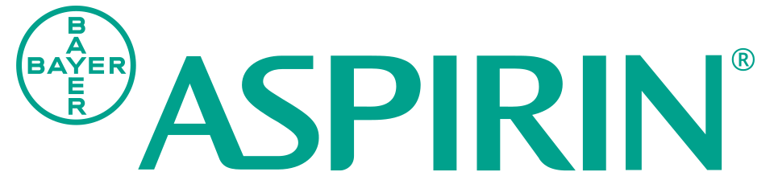

홈 > 브랜드 매거진 > GC녹십자
GC녹십자
GC녹십자(GC Biopharma, 옛 녹십자)는 1967년 설립된 한국의 바이오제약 기업으로, 혈액제제와 백신으로 알려져 있다.
산업 분야 헬스·제약 · 공개 등급 자료 기반 · 브랜드 평가 4.3 ★
한눈에 보는 브랜드
GC녹십자(GC Biopharma)는 1967년 10월 서울에서 수도미생물약품판매라는 이름으로 출발한 대한민국의 대표 혈액제제·백신 전문 제약기업이다. 1971년 국내 최초로 혈액제제를 자체 생산하며 첫 전환점을 맞았고, 1983년 세계 세 번째로 B형 간염 백신 개발에 성공하며 두 번째 도약을 이뤘다.
현재 연 매출 약 2조원 규모로 국내 제약·바이오 상위권에 위치하며, 지주회사 녹십자홀딩스를 정점으로 본사를 경기 용인 기흥에 두고 있다.
브랜드 관점
GC녹십자의 가장 큰 차별점은 합성의약품 위주의 국내 경쟁 구도에서 벗어나 혈액제제와 백신이라는 진입 장벽 높은 두 축에 반세기 넘게 집중해 왔다는 점이다. 혈액제제는 원료 혈장 확보와 분획 공정, 규제 승인이 모두 까다로워 CSL·그리폴스·다케다 같은 소수 글로벌 기업만이 경쟁하는 영역인데, GC녹십자는 알부민 국산화로 시작해 세계 5위권 생산 역량을 쌓았다.
최근 가장 중요한 변화는 면역글로불린 알리글로의 미국 FDA 승인과 본격 매출화다. 이는 국산 혈액제제 최초의 미국 진출로, 고마진 해외 매출이 늘며 7년간 부진하던 수익성이 반등했다는 의미를 가진다.
삼성바이오로직스·셀트리온이 위탁생산과 바이오시밀러로 외형을 키우는 흐름과 달리, GC녹십자는 자사 원천 바이오의약품을 직접 미국 시장에 파는 전략으로 한국 제약의 새로운 수출 경로를 열고 있다.
시작과 성장
GC녹십자의 뿌리는 의약품 대부분을 수입에 의존하던 1960년대 한국 제약 환경에 닿아 있다. 1967년 10월 수도미생물약품판매 주식회사로 설립된 회사는 1969년 극동제약, 1971년 녹십자로 사명을 바꾸며 정체성을 잡아갔다.
첫 결정적 전환점은 1971년으로, 전량 수입하던 알부민 등 혈액제제를 국내 최초로 자체 생산하며 혈액제제 전문기업의 길에 들어섰다. 두 번째 전환점은 1983년 세계 세 번째로 성공한 B형 간염 백신 개발이었고, 같은 시기 세계 최초의 유행성출혈열 백신 한타박스를 내놓으며 백신 분야 입지를 굳혔다.
이후 독감 백신과 수두 백신으로 백신 포트폴리오를 확장하고, 희귀질환 치료제 헌터라제를 개발해 사업 영역을 넓혔다. 2001년 지주회사 체제로 전환해 녹십자홀딩스를 정점으로 한 그룹 구조를 갖췄으며, 2018년에는 글로벌 도약을 겨냥한 브랜드 개편을 단행했다.
브랜드 아이덴티티
GC녹십자의 핵심 가치는 생명과 직결되는 의약품을 안정적으로 공급한다는 책임의식에 있다. 2018년 47년 만에 단행한 브랜드 개편으로 사명을 GC로 정리했는데, GC는 위대한 헌신과 도전을 통해 위대한 회사로 도약한다는 의지를 담는다.
비주얼 아이덴티티의 중심인 심벌은 두 개의 십자가 맞물린 형태로, 열정과 도전을 뜻하는 빨간 십자와 건강과 번영을 뜻하는 녹색 십자를 결합했고, 로고타입은 정직과 신뢰를 상징하는 블루를 써 전문성을 표현한다. 주 타깃은 의료기관·정부 보건당국·해외 규제시장이며, 브랜드 보이스는 과장 없이 신뢰와 전문성을 강조하는 절제된 톤을 유지한다.
제품과 서비스
주력은 혈액에서 분획한 바이오의약품과 백신이다. 정맥주사형 면역글로불린 알리글로는 미국 일차 면역결핍증 시장을 겨냥한 핵심 제품으로 연 1500억원대 미국 매출을 올렸고, 헌터증후군 희귀질환 치료제 헌터라제는 744억원 규모로 출시 이후 최대 실적을 냈다.
수두 백신과 독감 백신은 국가예방접종 사업에 대량 공급되며, 알부민 등 전통 혈액제제도 주축을 이룬다. 유통은 의료기관 납품, 정부 입찰 조달, 해외 규제기관 승인 기반 수출로 이뤄진다.
현재 상태
본사는 경기도 용인시 기흥구에 있으며, 지배구조는 순수지주회사 녹십자홀딩스를 정점으로 하는 그룹 체제다. 녹십자홀딩스의 최대주주는 허일섭 회장으로 약 11.67% 지분을 보유하고 특수관계인을 합치면 약 48%대에 이르며, 그룹은 국내외 합쳐 40여 개 계열회사를 두고 있다.
임직원 수는 약 2,341명 수준이다. 2024년 연결 매출은 약 1조9913억원으로 창립 이래 최대를 기록했고 영업이익은 691억원으로 전년 대비 두 배 이상 늘었다.
2025년에는 분기 매출이 사상 처음 6000억원을 돌파하고 수출 3억 달러를 달성하는 등 해외 비중 확대가 이어졌다. 이외 세부 재무 항목은 미공개.
타임라인
정리된 연도형 이벤트가 없습니다.
BI/CI 변천사
확인된 BI/CI 이미지가 아직 없습니다.
함께 읽을 브랜드
 헬스·제약 · 자료 기반셀트리온
헬스·제약 · 자료 기반셀트리온셀트리온(Celltrion)은 2002년 서정진이 설립한 한국의 바이오제약 기업으로, 바이오시밀러로 잘 알려져 있다.
 헬스·제약 · 자료 기반삼성바이오로직스
헬스·제약 · 자료 기반삼성바이오로직스삼성바이오로직스(Samsung Biologics)는 삼성그룹 계열의 바이오의약품 위탁개발생산(CDMO) 기업으로, 2011년 설립됐다.
휴젤(Hugel)은 보툴리눔 톡신 보툴렉스(레티보)를 보유한 한국의 미용 의료 바이오 기업이다.
When는 2025년에 기록된 Health & Wellbeing 계열의 브랜드 아이덴티티 사례입니다. Universal Favourite가 아이덴티티 작업의 디자이너...
 헬스·제약 · 자료 기반한미약품
헬스·제약 · 자료 기반한미약품한미약품(Hanmi Pharmaceutical)은 1973년 임성기가 설립한 한국의 제약 기업으로, 신약 기술수출로 잘 알려져 있다.

헬스·제약 · 편집 검수아스피린아스피린(Aspirin)은 1899년 독일 바이엘(Bayer)이 아세틸살리실산을 상표명으로 출시한 진통·해열·소염제다. 세계 최초의 대중 합성 의약품 가운데 하나로,...
Miles는 2023년에 기록된 Health & Wellbeing 계열의 브랜드 아이덴티티 사례입니다. Buddy buddy가 아이덴티티 작업의 디자이너로 기록되어...
Pelago는 2023년에 기록된 Health & Wellbeing 계열의 브랜드 아이덴티티 사례입니다. A Line Studio가 아이덴티티 작업의 디자이너로 기록...